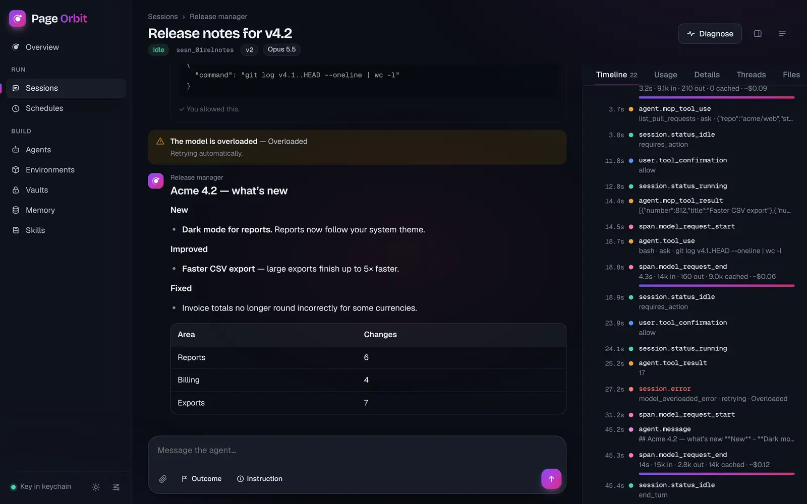
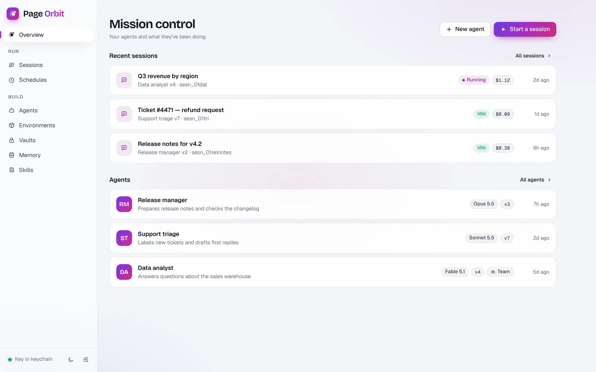

Two free, open apps for Anthropic’s models that run on your own API key. No subscription and no server in the middle. They’re built with security first.
Free & source-availableWindows · macOS · LinuxKey in your system keychainNothing fetched at runtime
Page Aura
Chat
Talk to Anthropic’s models the way you want.
A beautiful chat app that puts your monthly API credit to work, with the context you already have.
Several chats side by side, each with its own model and effort
Photos, PDFs, spreadsheets and long text
Web search with sources, and a low-cost research mode
Code, charts and Word, Excel, PowerPoint and PDF files
Memory, standing notes and your own project folders
The demo runs in your browser with sample data. To use your own agents, get the desktop app: Anthropic only lets apps, not web pages, reach its agent service.


Built the same careful way
Two products with one standard: the code that handles your key is small, embedded and checked.
Your own keyPay Anthropic directly at API prices. No accounts, no middleman, no markup.
Security firstYour key lives in the system keychain, and a strict security policy means the apps can only talk to Anthropic’s API.
Nothing fetched at runtimeEvery library is embedded and checked against its published fingerprint.
Free and openUse them at work or at home. The source is all on GitHub, and you can build them yourself.
Which one do I need?
Many people use both. They share a key on the desktop, so you add it once.
Page Aura
Page Orbit
Best for
Asking, writing, researching and analysing, in a conversation
Handing work to an agent that runs tools in its own sandbox, now or on a schedule
Who does the work
The model replies to you, turn by turn
The agent works on its own and asks you before risky steps